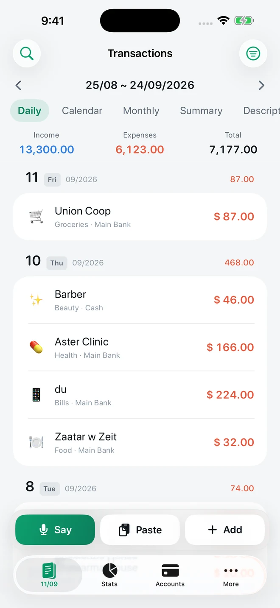
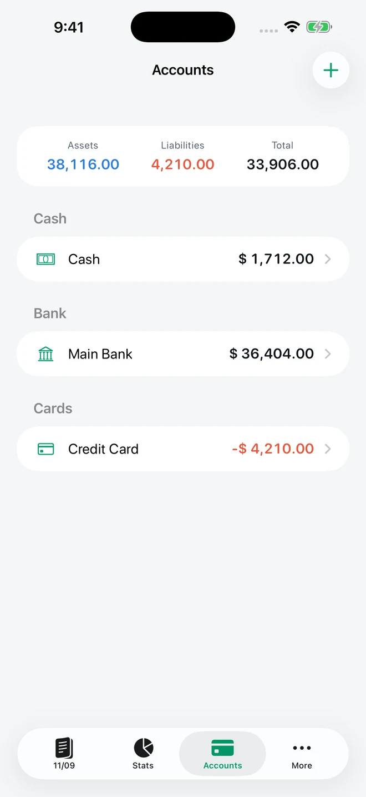

FEATURE · ICLOUD SYNC · FREE
One ledger on your iPhone, iPad and Mac.
Log a coffee on your iPhone and it is on your iPad and Mac a moment later, with your budgets, accounts and settings. TrackExpenses syncs through your own private iCloud. It is free for everyone, there is nothing to press, and there is no account to create.


Real app screens with example records. With sync on, every device shows the same ledger.
How it works
- Automatic: every entry, budget, account and setting syncs on its own. More → iCloud Sync shows whether this device is up to date.
- Private: the ledger is kept in the private part of your own iCloud, under your Apple Account. There is no TrackExpenses account and no server of the developer’s in between, so the developer can’t see it.
- Works offline: log entries anywhere. They are saved on the device and sync when it is back online.
- Free: sync is part of the free app. It uses a little of your iCloud storage.
Add another device
- Sign in with the same Apple Account on the other device, with iCloud on.
- Install TrackExpenses from the App Store. It runs on iPhone and iPad with iOS or iPadOS 17 or later, and on Mac computers with Apple silicon.
- Open it. Your ledger arrives within a minute or two. Keep the app up to date on every device that shares your iCloud.
What stays on each device
A few things belong to one device and are set there: the App Lock passcode; the theme, appearance and app icon; and the switches for budget alerts and bill reminders, because a notification belongs to the phone it arrives on. The bank SMS and email automation runs on the iPhone that receives the messages, and what it files appears on every device. Free allowances, such as 10 voice entries and 10 automatic bank imports a month, are counted on each device.
When devices disagree
If two devices end up with different month start days or currencies, for example because both were set up before sync caught up, More → iCloud Sync shows Your devices disagree with both sets side by side. Tap the one you want and confirm Use on Every Device. Your entries, accounts and budgets stay as they are; only the settings change.
Erase and restore reach every device
Because the ledger is shared, Erase all data in More → Backup & Export deletes it from this device and every device that syncs with your iCloud, and restoring a backup (Pro) replaces it everywhere. Both ask before they do anything. The privacy page explains what stays where, and the privacy policy has the full wording.
Questions
Is iCloud sync free?
Yes. Sync is part of the free app for everyone. It uses a little of your iCloud storage.
Can the developer see my synced data?
No. The ledger is kept in the private part of your own iCloud, under your Apple Account. There is no TrackExpenses account and no developer server in the sync.
Does TrackExpenses run on a Mac?
Yes, on Mac computers with Apple silicon, from the App Store. With iCloud sync on, the Mac shows the same ledger as your iPhone and iPad.
What doesn’t sync?
The App Lock passcode, the theme, appearance and app icon, and the switches for budget alerts and bill reminders are set on each device. The bank SMS and email automation runs on the iPhone that receives the messages, and what it files appears everywhere.
My devices show different months or currencies. What do I do?
Open More, then iCloud Sync. Under Your devices disagree, tap the settings you want and confirm Use on Every Device. Your entries, accounts and budgets stay as they are.
Can I share my budget with my partner?
No. Sync joins the devices signed in to one Apple Account. There are no shared budgets between two people.
Your money, easier to follow.
Expense Tracker: SMS & Voice for iPhone, iPad and Mac.
5.0 on the App Store · 10 ratings across 7 countries · Checked 2026-11-21
App facts and free / Pro limits
Expense Tracker: SMS & Voice (TrackExpenses) is made by Mohamed Elatabany for iPhone and iPad with iOS/iPadOS 17 or later, and runs on Mac computers with Apple silicon. The app is in English, Arabic, German, Spanish and Brazilian Portuguese, with a full right-to-left Arabic interface. No app account or bank login is required. Optional Shortcuts automations import supported bank SMS, bank email alerts (through Apple’s Mail app) and Wallet purchases, and a bank SMS or email can be pasted; the app does not read your Messages inbox or your email. Voice entry creates on-device drafts on compatible devices and languages. The free ledger includes unlimited manual transactions, budgets, current-period budget moves and Cover with the total unchanged, days left and spent/left amounts, budget alerts (at 80% when ahead of pace, and when over), bill reminders the morning before a repeating expense is due, historical stats, search with Spent and Income totals across every period, private iCloud sync across iPhone, iPad and Mac, 3 accounts, 2 recurring rules, 10 saved voice entries per calendar month per device and 10 successful automatic bank SMS or email imports per calendar month per device. Touching and holding the app icon offers Say an expense, New expense, Paste bank message and Ask your coach. The money coach reads the last budget month and suggests one limit. Today’s spending, a category, account balances, any named month, charts, files and typed logging are worked out on the device without using a question; open questions go to Anthropic’s Claude through the developer’s relay only after the user agrees, with the conversation so far, a summary of this month and last month and, when the model asks, totals for up to 13 months or up to 20 purchases with their date, shop, category and amount; never notes, receipts, account names or numbers, or balances (10 a month free per device). SMS alerts past the free allowance are kept but locked outside totals; upgrading to Pro adds them all, otherwise the next calendar month’s allowance releases as many as it covers. Nothing is dropped and saved history is never locked; when Pro or a trial ends, entries, accounts and repeating bills keep working. Pro adds unlimited voice entry, SMS and email imports, accounts and recurring rules, money coach challenges and more coach questions, a salary plan, forecasts, overall and per-budget daily guidance with repeating bills accounted for first, a daily budget for chosen categories optionally up to a date, what-if planning, Export & Share (CSV of any range and the full JSON backup; every export is Pro since 1.15.0), CSV import, backup restore, themes and alternate icons. Monthly and annual subscriptions and a one-time lifetime purchase are available. Spending calculations depend on your records and are not financial advice.